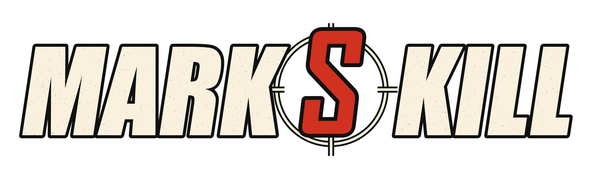

Scope judgment
Start with the user's goal and the observed behavior. Keep sound structure; repair, restructure, or replace what prevents the required result.

markskill helps coding agents understand the problem, choose the right scope of change, and show what the evidence supports.
Read the skillShared rules with focused references.
Start with the user's goal and the observed behavior. Keep sound structure; repair, restructure, or replace what prevents the required result.
Trace invariants, callers, state, and data before changing the owner. Preserve validation, authorization, recovery, and useful regression evidence.
Separate source inspection, tests, rendered behavior, and production checks. Report what each check actually established.